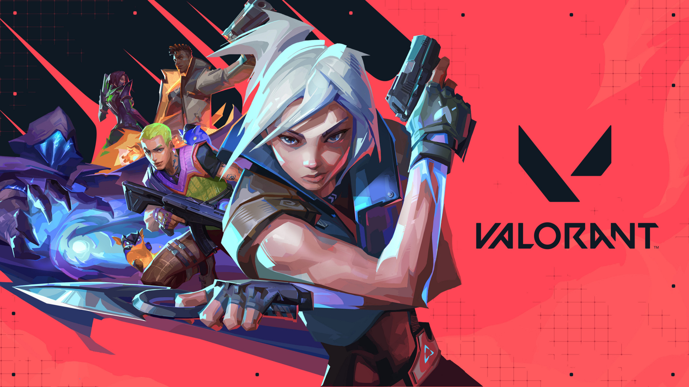
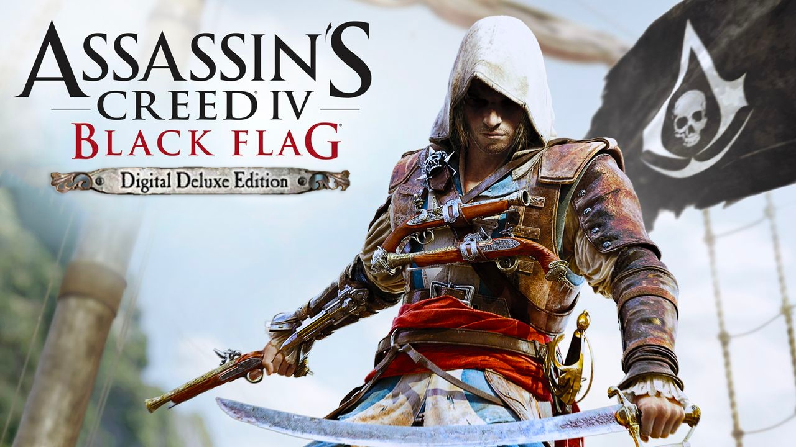

Radio Orienteering (Sport) 🏃🏻♀️
Radio orienteering is an active form of radio sport where participants use a map, compass, and a special radio receiver to find hidden transmitters (“foxes”) in the area, competing for the best time.
Dance 💃

For me, dance is not just moving to music - it’s a way to express my creativity, energy, and feelings in new and unusual forms that inspire and energize me.
Photo 📸
Photography allows me to show how I see the world, capture beauty even in the smallest details, and share this vision with others.
Computer Games 🎮
Valorant

Assassin’s Creed: Black Flag

I enjoy playing Valorant—a dynamic team shooter where strategy, precision, and teamwork are essential.
This is my favorite story - driven game, capturing the spirit of piracy, freedom, and adventures in an open - world ocean setting.
Music 🎵
Music is my way to relax, detach from daily thoughts, and recharge with positive energy.
Writing Poems ✍️

Writing poems helps me release my emotions and share them with readers, expressing my feelings through words.